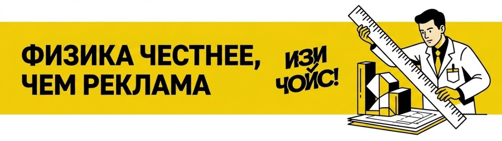

Знакомое чувство: выбираешь гаджет, а консультант с горящими глазами рассказывает про «интеллектуальное облачное управление», «8К-апскейлинг» или «120 режимов работы под музыку». Платишь на 30% больше, приносишь покупку домой и... через неделю понимаешь, что используешь ровно одну кнопку.
Маркетинг в 2026 году — это искусство продавать не пользу, а наше воображаемое будущее, в котором у нас есть время разбираться во всех этих сложностях. Но на территории ИЗИ ЧОЙС правила другие. Здесь мы ценим реальный результат, а не строчки в рекламном буклете. Давайте отсечем всё лишнее.
Это когда вы покупаете духовку с Wi-Fi, чтобы «включать её по дороге с работы». Реальность: за три года приложение не скачивается ни разу. Лишние функции — это не только переплата, но и лишние узлы, которые могут сломаться.
Хочу">8K на экранах 50 дюймов, 200 мегапикселей в смартфоне, 15 000 Па в роботе-пылесосе. На бумаге — мощь. На деле — физика имеет пределы. Глаз не видит разницы в пикселях на маленьком экране, а крошечная матрица камеры «шумит» одинаково, сколько бы цифр на ней ни написали.

Бренды делают всё, чтобы в вашем доме были только их устройства. Это удобно, пока вам не захочется сменить один гаджет на модель получше от другого производителя — и вдруг выясняется, что «магия» совместимости пропала.
Чтобы не сойти с ума от выбора, стоит разделить подход к покупкам на три понятных сценария:
Здесь стратегия проста — «Читаем функции». Вещь должна просто делать свою работу.
Стратегия — «Достаточный комфорт». Плата за то, что реально экономит время.
Стратегия — «Инвестиция в кайф». Покупка того, что дарит эмоции каждый день.
Покупка техники в 2026 году — это не выбор «железа», а выбор того, сколько своего внимания и денег вы готовы уступить гаджету.
Финальный чек-лист:
Лучшая функция — та, которой вы пользуетесь каждый день. Всё остальное — просто шум. Делайте свой ИЗИ ЧОЙС! 💸